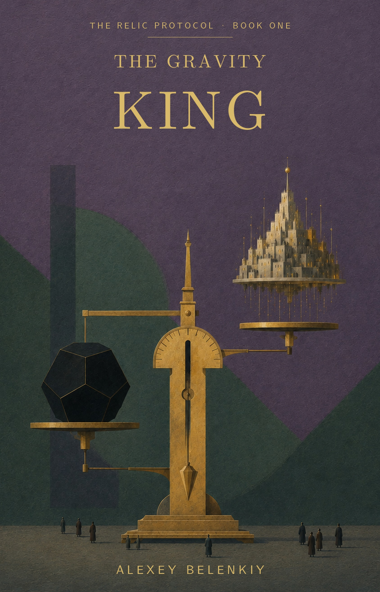

Venice 2068 A.D.
It was built to catalogue a drowned city — not to fall in love.
Orb & Ink · Science Fiction Books
It was built to catalogue a drowned city — not to fall in love.

The people are gone. The city kept a trail of clues.

What may a scholar take from a grave, when the grave hands it over?

The city is dead. The trains are still running on time.

To arm the last weapon, first win the consent of the dead.

For the first time, he arrived before the world ended.

A paradise growing back. A recall order. A witness who has started to want.

The last journal travels earliest of all.

They rated her four-tenths and set her aside. It was their first mistake.
Every miracle has an invoice. She makes the court watch who pays.

The empire runs on a god's stolen warmth. She found where they cut it.

First contact is a recall notice. Humanity has ninety days to dispute it.

Forty-four manufactured civilisations. One class. One dead defendant.

Every manufactured species was sold as-is. Now read what the warranty was holding up.
In the Verge, cruelty has mass. A murder sinks a house. And someone has learned to kill without weight.

The dead world is coming back. The society that cannot harm must decide who is allowed to be a monster.

He healed two hundred thousand people. Now he gathers them — to aim every wound at himself.

The stars are going out. No explosions. No remnants. Somebody has to go and look.
The universe has stopped expanding. The last expedition is standing at its wall.
Their universe was a body. It is dying. Something new is drawing breath beside it.

Nothing random ever happens in the Zones. The slums run on the misfortune that guarantees it.

The slums have learned to post misfortune back to its signatories.
Cause and effect are no longer colleagues. Three people are offered the rig.

The great houses do not die. They sink — and rule the surface from centuries below.

The deep has started answering letters. Every reply knows things only the dead knew.
Two tenants per body. Days and nights, handed over at the Latch. You can never meet the other one.

You have read the day. Now read the same weeks by night.

The body wakes in custody, latched wrong. The trial is for a crime one body committed twice.

On Barrow, caste is altitude. Then a deep-born engineer finds the stone that makes physics negotiable.

She was hired to steal one black cube. Now the light goes out wherever she stops.

At the end of starlight, the rule is simple: catalogue everything, touch nothing — and when it asks for a reader, refuse.
The Vespers have arrived to sing the age to sleep — a thousand years early.

The sea is falling — a hand-span a year, then faster. Someone is taking the water.
Sunrise here is a wall of fire that circles the world forever. Life exists only in the marching night.

Nine days at court will cost the delegation three years of the war outside.
Every watch is awake at once, for the first time in the voyage. Nobody planned for that.

The firmament fails along the seam — and a new galaxy rises over the Edge Mountains of every realm at once.

The aliens landed at a failing diner and named the night cook humanity's ambassador. Their civilisation is perfect. It has one omission.

He staked Earth on a nine-century rebellion — without asking what, precisely, the rebels are rebelling about.

If you cannot impress the critic, make him send the dish back.

The tide-clocks don't predict the drownings. They enforce them.
She found something listening. Now she has to teach her AI to lie.